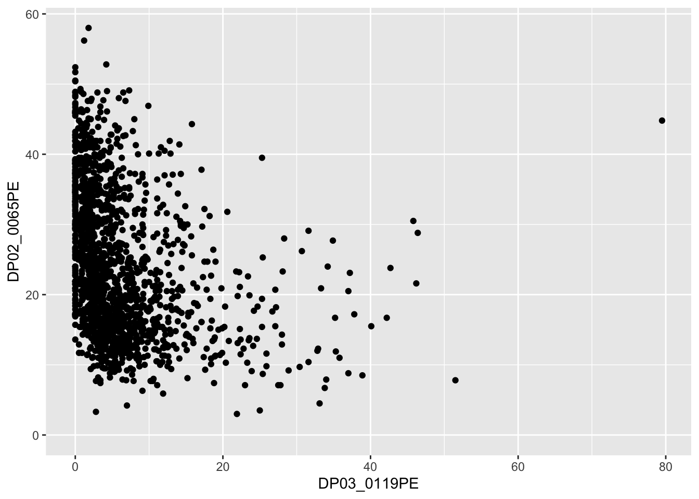
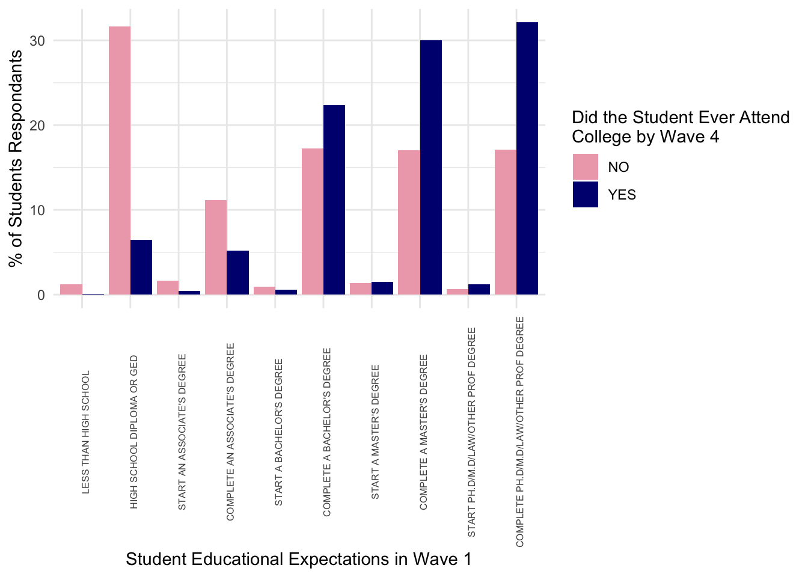

data_18_pub <- read_csv("data/ipeds-finance/f1819_f1a_rv.csv")
data_18_np <- read_csv("data/ipeds-finance/f1819_f2_rv.csv")
data_18_fp <- read_csv("data/ipeds-finance/f1819_f3_rv.csv")IV: Advanced tidyverse & Data Retrieval
In this lesson, new in 2024 and updated for 2025 we are going to cover a few more advanced topics
tidyversecommands that can save a lot of time- Automated data retrieval methods that make our work much more reproducible
- Bonus Material: The relationship between
tidyverseandSQL
- Now you have a decent grasp on the core functions of
tidyversewe can start exploring some helper functions that can make our lives much easier! - These commands have been chosen as I have personally found them wildly helpful in working with IPEDS and other data
- To demonstrate, we are going to use IPEDS finance data files for 2018/19 school year
- Notice: IPEDS uses separate data files for public
_f1anon-profit_f2and for-profit_f3colleges
- First, since there should be no college in more than one of these data files, and each college only has one row, we can
bind_rowsto stack each one on top of the other- Then run a quick test to check no UNITID appears more than once (no duplicates)
data_18 <- bind_rows(data_18_pub, data_18_np, data_18_fp)
data_18 |>
count(UNITID) |>
filter(n > 1)# A tibble: 0 × 2
# ℹ 2 variables: UNITID <dbl>, n <int>- Notice: we now have 6069 obs. of 663 variables
- Does this pass the “eyeball test”?
- The number of obs. looks right as it is just sum of the obs. from the 3 dfs
- The number of vars. may look concerning at first
- Why, if all we did was “stack” rows on top of each other, would the number of vars increase?
- Does this pass the “eyeball test”?
- What we have created is a somewhat “sparse” data frame, as each institution category has differently named variables (in part due to differing reporting requirements)
Our data looks something like this
| Public Vars | Non-Profit Vars | For-Profit Vars | |
|---|---|---|---|
| Public IDs | values |
NA |
NA |
| Non-Profit IDs | NA |
values |
NA |
| For-Profit IDs | NA |
NA |
values |
- Hmm, sounds like this could get tricky… Luckily
tidyverseis here to help!
coelesce() Data Split Across Columns
- Let’s say we want to combine this information into one variable to show how much all institutions spend on instruction, research, and student services, respectively
- Side note: If combining variables like this in your own work, check the code book to ensure you know what you’re combining and why
- In this case, the variables we will be combining appear to be close equivalents
- First things first, let’s
select()the relevant variables from the larger data set using the IPEDS dictionary files- Quick question: How did I find the variable names to use below?
data_18 <- data_18 |>
select(UNITID,
F1C011, F1C021, F1C061,
F2E011, F2E021, F2E051,
F3E011, F3E02A1, F3E03B1)
print(data_18[100:105,])# A tibble: 6 × 10
UNITID F1C011 F1C021 F1C061 F2E011 F2E021 F2E051 F3E011 F3E02A1 F3E03B1
<dbl> <dbl> <dbl> <dbl> <dbl> <dbl> <dbl> <dbl> <dbl> <dbl>
1 109819 81760530 0 13575072 NA NA NA NA NA NA
2 109907 8880360 241606 5093396 NA NA NA NA NA NA
3 110246 40754283 0 13656135 NA NA NA NA NA NA
4 110334 54226032 0 18432007 NA NA NA NA NA NA
5 110398 28937539 0 5591440 NA NA NA NA NA NA
6 110422 219559005 2847727 78536402 NA NA NA NA NA NAprint(data_18[3000:3005,])# A tibble: 6 × 10
UNITID F1C011 F1C021 F1C061 F2E011 F2E021 F2E051 F3E011 F3E02A1 F3E03B1
<dbl> <dbl> <dbl> <dbl> <dbl> <dbl> <dbl> <dbl> <dbl> <dbl>
1 206862 NA NA NA 17364863 0 8130862 NA NA NA
2 207157 NA NA NA 1055254 0 975876 NA NA NA
3 207324 NA NA NA 16367709 0 9449815 NA NA NA
4 207403 NA NA NA 14538443 0 10456812 NA NA NA
5 207458 NA NA NA 39875546 0 12083472 NA NA NA
6 207582 NA NA NA 26366669 101944 12445590 NA NA NA- For the sake of demonstration, let me show how to do this for instruction without our first “tidyverse trick”
- Fun fact: I did something very close to this in my final project when I took this class!
## Split back up into separate files
pub <- data_18 |> filter(!is.na(F1C011)) |>
## Rename the variable
rename(inst_spend = F1C011) |>
## Drop the other variables
select(UNITID, inst_spend)
np <- data_18 |> filter(!is.na(F2E011)) |>
rename(inst_spend = F2E011) |>
select(UNITID, inst_spend)
fp <- data_18 |> filter(!is.na(F3E011)) |>
rename(inst_spend = F3E011) |>
select(UNITID, inst_spend)
## Re-bind the colleges back up
rebind <- bind_rows(pub, np, fp)Quite a lot of code, and that is a relatively simple case
Luckily, tidyverse has a command to help us,
coalesce()- Returns the first non-missing value across any number of columns
- This works perfectly in situations like this, when you only have one data point for each row, it could just be in any column
- Returns the first non-missing value across any number of columns
Let’s check, are they the same?
all.equal(rebind, coalesce)[1] "Modes: list, function"
[2] "Lengths: 2, 1"
[3] "names for target but not for current"
[4] "Attributes: < Modes: list, NULL >"
[5] "Attributes: < Lengths: 2, 0 >"
[6] "Attributes: < names for target but not for current >"
[7] "Attributes: < current is not list-like >"
[8] "current is not list-like" Yep! So let’s do all the columns and get a clean data frame
let’s do all the columns and get a clean data frame
data_18_clean <- data_18 |>
mutate(inst_spend = coalesce(F1C011, F2E011, F3E011),
rsch_spend = coalesce(F1C021, F2E021, F3E02A1),
serv_spend = coalesce(F1C061, F2E051, F3E03B1)) |>
select(UNITID, inst_spend, rsch_spend, serv_spend)
print(data_18_clean[100:105,])# A tibble: 6 × 4
UNITID inst_spend rsch_spend serv_spend
<dbl> <dbl> <dbl> <dbl>
1 109819 81760530 0 13575072
2 109907 8880360 241606 5093396
3 110246 40754283 0 13656135
4 110334 54226032 0 18432007
5 110398 28937539 0 5591440
6 110422 219559005 2847727 78536402print(data_18_clean[3000:3005,])# A tibble: 6 × 4
UNITID inst_spend rsch_spend serv_spend
<dbl> <dbl> <dbl> <dbl>
1 206862 17364863 0 8130862
2 207157 1055254 0 975876
3 207324 16367709 0 9449815
4 207403 14538443 0 10456812
5 207458 39875546 0 12083472
6 207582 26366669 101944 12445590- This is a real time saver if working with IPEDS finance data
- Another use case for this might be if you had 30 columns one for each test date and rows for student scores, they all took the test on one of the dates, you want a single column for student scores, but it could have been recorded in any of the date columns
Finding if_any() Issues
- Although compliance is a federal requirement, completeness of reporting remains a struggle when using IPEDS data
- From the snapshots of the data we have seen so far, it seems that there’s a good number of $0 reports for these values
- Let’s try and get a data frame containing only institutions that reported $0 for one of these spending categories
data_0_inst <- data_18_clean |> filter(inst_spend == 0)
data_0_rsch <- data_18_clean |> filter(rsch_spend == 0)
data_0_serv <- data_18_clean |> filter(serv_spend == 0)
data_0 <- bind_rows(data_0_inst, data_0_rsch, data_0_serv)
## Plus we end up with duplicates
data_0 |>
count(UNITID) |>
filter(n > 1)# A tibble: 375 × 2
UNITID n
<dbl> <int>
1 100733 3
2 103529 3
3 106324 2
4 106360 2
5 106494 2
6 107099 2
7 108056 2
8 108269 2
9 111045 2
10 111708 2
# ℹ 365 more rows- With the
if_any()helper function
data_0 <- data_18_clean |>
filter(if_any(everything(), ~ . == 0)) ## h/t https://stackoverflow.com/questions/69585261/dplyr-if-any-and-numeric-filtering
print(data_0)# A tibble: 4,803 × 4
UNITID inst_spend rsch_spend serv_spend
<dbl> <dbl> <dbl> <dbl>
1 100733 0 0 0
2 100760 8740330 0 3605430
3 100812 17101084 0 2918417
4 101028 6298586 0 2062946
5 101143 7532616 0 3094312
6 101161 23308825 0 7205781
7 101240 20593662 0 7278193
8 101286 17872473 0 4563448
9 101295 20945006 0 6225596
10 101301 5373481 0 3216811
# ℹ 4,793 more rowsLet’s walk through this code
- Assign our results to a new object called
data_0 - Take
data_18_cleanand pipe it into filter - Inside
filter()we have ourif_anyhelper function, which has two arguments
.colswhich columns to look across - Here we have just gone for all columns witheverything(), but you could input a list of specific column names, or another selection function likewhere(is.numeric)).fnsfunction to test the columns against - Here we have use~ . == 0- We haven’t used
purrrfromtidyversein this class, but the~comes from there, in short, it starts a very simple function for us- The function takes any value
.and asks if it equals 0== 0 - If the function returns
TRUE(as in it equals 0) for any column, that row will befilter()-ed in
- The function takes any value
- We haven’t used
- Assign our results to a new object called
Working across() Multiple Columns
- Now let’s explore that data a little more with
if_any()’s sister functionacross()- Internally
if_any()andacross()are set up the same- They both take
.colswhich columns to look across.fnsfunction to test the columns against
- They both take
- The difference between them comes down to which function they work in
if_any()is used in a handful of functions likefilter()acrossis used in most functions likesummarize()andmutate()- If you try to use
across()where you aren’t meant totidyversewill throw you a warning
- If you try to use
- Internally
- Here, we will use the
acrossfunction insidecount()to get a breakdown of which spending categories are unreported most often
data_0 |>
select(-UNITID) |>
count(across(everything(), ~ . == 0))# A tibble: 7 × 4
inst_spend rsch_spend serv_spend n
<lgl> <lgl> <lgl> <int>
1 FALSE FALSE TRUE 12
2 FALSE TRUE FALSE 4411
3 FALSE TRUE TRUE 336
4 TRUE FALSE FALSE 5
5 TRUE FALSE TRUE 2
6 TRUE TRUE FALSE 12
7 TRUE TRUE TRUE 25- The internal logic of the
across()here is identical to theif_any()aboveeverything()works across all columns,~ . == 0is a simple function to test if any value equals 0
across()just works in thecount()function- Outputs a count table counting combinations of the variables equaling 0
- By far the most common variable to report zero is research spending, with 4411 reporting only that variable as 0
- 25 schools reported 0 for all three variables
- Outputs a count table counting combinations of the variables equaling 0
- Although we’ve only been working across 3 variables in these examples, the power of these commands is that they can work across an unlimited number of columns, so the bigger your data, the more should be thinking
across()andif_any()
Moving Beyond ifelse() with case_when()
Keeping digging into differences in spending categories, next, let’s say we want to create a new variable that says which order the three spending categories were for each school
Let’s walk through the
case_when()code- Much like we used
ifelse()inside mutate to make a new variable in Data Wranling I, we can usecase_when()when we have more than a binary test
case_when()goes down the list of conditions in order until it finds one that it answersTRUEat which point it returns the value on the right hand side of the~- Here we have listed out all possible orders of spending categories with a label for each scenario
- Unlike
ifelse()there is a unique danger that would don’t cover every eventuality with your conditions
- This is why I like to end with
TRUE, as that will beTRUEno matter what- I then assign some kind of catch-all phrase that makes me know I made an error (it will just
NAif you don’t do this)
- I then assign some kind of catch-all phrase that makes me know I made an error (it will just
- To check if a
case_when()worked, I like to pipe it into acount()for the new variable we made
- Much like we used
data_18_clean |>
mutate(highest_cat = case_when(inst_spend > rsch_spend & rsch_spend > serv_spend ~ "inst_rsch_serv",
inst_spend > serv_spend & serv_spend > rsch_spend ~ "inst_serv_rsch",
rsch_spend > inst_spend & inst_spend > serv_spend ~ "rsch_inst_serv",
rsch_spend > serv_spend & serv_spend > inst_spend ~ "rsch_serv_inst",
serv_spend > inst_spend & inst_spend > rsch_spend ~ "serv_inst_rsch",
serv_spend > rsch_spend & rsch_spend > inst_spend ~ "serv_rsch_inst",
TRUE ~ "You missed a condition Matt")) |>
count(highest_cat)# A tibble: 7 × 2
highest_cat n
<chr> <int>
1 You missed a condition Matt 377
2 inst_rsch_serv 262
3 inst_serv_rsch 5004
4 rsch_inst_serv 35
5 rsch_serv_inst 4
6 serv_inst_rsch 384
7 serv_rsch_inst 3Looks like I missed something in my
case_when(), can anyone guess what it is?What would happen to this school
- inst_spend 35,000,000
- rsch_spend 20,000,000
- serv_spend 20,000,000
- As I have only specified for all order of categories being “greater than” the other, situations where two categories are equal slip through the cracks
- This was a genuine mistake when writing the lesson, precisely why I always include that catch all
- As I have only specified for all order of categories being “greater than” the other, situations where two categories are equal slip through the cracks
Let’s see how our results change if I use “greater than or equal to” signs
data_18_clean |>
mutate(highest_cat = case_when(inst_spend >= rsch_spend & rsch_spend >= serv_spend ~ "inst_rsch_serv",
inst_spend >= serv_spend & serv_spend >= rsch_spend ~ "inst_serv_rsch",
rsch_spend >= inst_spend & inst_spend >= serv_spend ~ "rsch_inst_serv",
rsch_spend >= serv_spend & serv_spend >= inst_spend ~ "rsch_serv_inst",
serv_spend >= inst_spend & inst_spend >= rsch_spend ~ "serv_inst_rsch",
serv_spend >= rsch_spend & rsch_spend >= inst_spend ~ "serv_rsch_inst",
TRUE ~ "You missed a condition Matt")) |>
count(highest_cat)# A tibble: 6 × 2
highest_cat n
<chr> <int>
1 inst_rsch_serv 624
2 inst_serv_rsch 5005
3 rsch_inst_serv 37
4 rsch_serv_inst 4
5 serv_inst_rsch 396
6 serv_rsch_inst 3No missing conditions this time, hooray!
Also, I’m definitely surprised how few institutions spend most on research, and just how many spend instruction > services > research
- Does this surprise you as well?
Advanced Tidyverse Summary
- I hope some of these more advanced
tidyversecommands will prove helpful, particularly as you move into the world of bigger data sets with more variables! - Next, we are going to look at some practices for automating data retrieval to enhance our research reproducibility
Section One: Reproducibility & Replicability
In this first section we will discuss what reproducibility is, why is matters, and how automating data retrieval can help achieve it.
What is reproducibility?
The “reproducibiity crisis” began to gather steam in STEM fields in the mid-2010s
Specific to educational research, a joint report from the National Science Foundation (NSF) and Institute of Education Sciences (IES) define reproducibility as
“the ability to achieve the same findings as another investigator using extant data from a prior study”.
In other words, can another researcher get the same results as you if they start with the same data?
Quick Question
Based on the video we just watched and your prior knowledge, why are we concerned about reproducibility?
According to the NSF/IES report, what can authors do to enhance reproducibility?
Minimum/baseline level
- Your methods section should describe the analyses should describe the analyses you performed in enough detail that someone could broadly copy what you did
- However, rarely are you going to be able to describe enough to achieve exact reproducibility
- Imagine detailing all your data cleaning decisions, specific model settings, etc. in the paper’s text
- However, rarely are you going to be able to describe enough to achieve exact reproducibility
True reproducibility
- Ideally, you use a public repositories to store data and code
- “Data used to support claims in publications should be made available in public repositories along with data processing and cleaning methods, relevant statistical analyses, codebooks as well as analytic code”
Common data sharing issues
- However, sharing data in public repos can be tricky, even if the data is public
- Size constraints (GitHub)
- License and right to share concerns
- Also, you might accidentally upload an edited version
- If you can’t share data yourself, you could provide clear instructions on how to retrieve the data (e.g., “go to this site”, “click on this option”, “select these 4 variables”, “click download”)
- This can be time-consuming and error-prone
- This is where automating data retrieval can help (more on that later)
Reproducibility vs Replicability
- You may also here the word “replicability” used in the same context.
- Sometimes the words are used interchangeably depending on the context.
- The NSF/IES joint report suggest replication is a “higher bar” than reproducibility, where the same results can be achieved by entirely new studies.
To enhance replicability
- Results need to be truly generalizable to your study population
- Somewhat hard to know with a single study
- Best step you can take is to pre-register your study
- Becoming the gold standard in medical trials
- Before you run your analysis (or even collect/explore your data) you make your analysis plan available
- Either publicly online or get it pre-approved for publication with a journal
- Prevents “p-hacking” and other temptations during the statistical analysis which can lead to non-replicable results
- AERA Open list “Registered Reports” as an option in their submission guidelines
- In this workshop we will focus on a specific step towards achieving reproducibility: automating data retrieval?
Small Group Discussion Exercise (5 mins)
Find of a recent piece of published work you’re already familiar with
- If you wanted to, do you think you would be able to reproduce the results?
- If you couldn’t, what would the author need to do to make it reproducible?
- If you could, how easy do you think it would be?
Why does reproducibility matter?
Cited in the NSF/IES joint report, the a Subcommittee on Replicability and Science suggest reproducibility is the
“Minimum necessary condition for a finding to be believable and informative”.
- Research (at least from a post-positivist world view) should always be about trying to move us closer to understanding the truth about the world
- Being able to reproduce research helps us in this goal by raising the level of trust we can have in results
- Honest mistakes are made in research, making it reproducible helps us know if there are any
- Less-than-honest findings can be hidden behind when work isn’t reproducible
- A common one that may seem harmless is only reporting partial results, those that fit the narrative
If I do all this, will anyone ever actually reproduce my work?
A 2014 Educational Researcher article by Makel & Plucker shows significantly less educational research is devoted to reproduction and replication than in other fields, only 0.13%.
We are seeing more meta-analyses in education
- These involve some replication, however, they serve a totally different purpose
- Meta-analyses aim to synthesize overall findings across multiple studies
- Reproduction and replication aim to test the quality and trustworthiness of a single study
- These involve some replication, however, they serve a totally different purpose
More reproduction and replication studies would help raise the credibility of education research among scientific researchers
Even if we don’t want to go out and start reproducing and replicating other studies, we can help the cause by ensuring our studies are as reproducible as possible.
Small Group Discussion Exercise (5 mins)
Okay, we get it, reproducibility is awesome… But sometimes it isn’t possible
- Think of a specific study or scenario (real or fictional) where true open reproducibility (e.g. sharing data) is either not possible or not practical
- In that scenario, what can you do to aid reproducibility and/or replication?
How does automating data retrieval achieve reproducibility?
Above we discussed how reproducibility is “the ability to achieve the same findings as another investigator using extant data from a prior study”
We also discussed how in order to make work reproducible researchers should publish code and data where possible
Automating data retrieval makes this process easier and gets around common issues in sharing secondary data
All we have to provide a researcher is our code and the data is “automagically” downloaded for them
- Helps us ensure the reproducing researcher has the correct data
- No worries about file names, sharing restrictions, or size limits
- Provides additional trust to the researcher that the data is coming directly from the source and hasn’t been edited/doctored
- Helps us ensure the reproducing researcher has the correct data
In next two sections of the workshop we are going to cover tools that we can use to automate data retrieval in our work
Section Two: Using IPEDtaS to Automagically Retrive Labelled IPEDS Data in Stata & R
For this section we will walk through the tutorial page for IPEDtaS which can be found at capaldi.info/IPEDtaS/tutorial
Section Three: Other Tools & Packages for Automated Data Retrieval
Okay, hopefully you will find the IPEDtaS script useful in future research, but, IPEDS is not the only common source of open data for education research (there are some other ways to automatically retrieve IPEDS too).
In the remaining session time we are going to cover a handful of API’s the can be used to download data from common educational research sources.
US Census APIs & tidycensus
We’re going to use this API in our final Data Viz lesson at the end of the semester, so time dependent, we may save this for this for then!
- So what exactly is an API?
- In short, think of it as a way of R going to a website/database and pulling data directly from the server-side or back end, without our having to ever interact with the website directly
- This has two main advantages
- We don’t have to store the large dataset on our computer
- Our work becomes instantly more reproducible
- Most APIs require that you use some kind of key that identifies you as an authorized user
- Typically you need to set up the key the first time you use the API, but helpfully, it’s usually possible to store the key on your computer for all future use
- Many API keys are free to obtain and use
- If you were using an API to access a private database such as Google Maps, you might need to pay for your key to have access depending on how much you use it
- But because we are using Census data, which is freely available to the public, there’s no charge
Getting Census API Key
- Getting your Census API key is extremely easy
- Simply go here
- Enter your organization name (e.g., University of Florida)
- Enter your school/work email
- You will quickly receive an email with your API key, which you will need in a moment
- There are a number of R packages that access the Census API
- Personally, I think
tidycensusis the easiest to use, particularly if you generally use atidyverseversion R - You can check out the full documentation website for
tidycensushere
install.packages("tidycensus")
library(tidycensus)- Next, we want to set our census API key in R, this is a convenient feature that you only have to do once
census_api_key("<key>", install = T)Okay, with that, we are ready to download our data!
- Note, the process is generally similar for a lot of APIs; get a key, set a key, go!
For this example, we are just going to pull down the % of 25+ population with a bachelor’s degree and the % of families below the poverty line for every county in the great state of Minnesota
- These variables are measured in the Census Bureau’s American Community Survey, which are survey responses collected over 3 and 5 year intervals
- More current and have more variables than the decennial Census
- These variables are measured in the Census Bureau’s American Community Survey, which are survey responses collected over 3 and 5 year intervals
For the sake of time, I have already found the variable names
- If you want to look them up in the future, use this Census API Variable List
- You can change the year in url to access different years
DP02_0065PEis % of 25+ population with a bachelor’s degreeDP03_0119PEis % of families below the poverty lineThere are multiple main
tidycensusfunctions that you can use to call in data, with each calling data from a different source operated by the US Census Bureauget_acs()get_decennial()get_estimates()get_flows()get_pop_groups()get_pums()
You can see more information about these on the tidycensus reference page
For today’s example we are going to use
get_acs()- This collects data from the American Community Survey (regular sampled surveys of demographic data across the US)
We are going to assign
<-the data we pull down into the objectdata:
data <- get_acs(geography = "tract",
state = "MN",
year = 2022,
survey = "acs5",
variables = c("DP02_0065PE", "DP03_0119PE"), # Pop >=25 with Bachelors, Pop below poverty line
output = "wide",
geometry = FALSE)Now, we could look at these in a quick plot
ggplot(data) +
geom_point(aes(x = DP03_0119PE,
y = DP02_0065PE))
By using either of these packages for research with Census data, you get a convinient way to access Census data, plus, you make your work infinitely more reproducible in the process
Urban Institute Education Data Explorer
- Another API that might be useful is the Urban Institute’s Education Data Explorer
- This actually has access to a bunch of education datasets including;
- Common Core of Data
- The Civil Rights Data Collection
- Small Area Income and Poverty Estimates
- EDFacts
- Integrated Postsecondary Education Data System
- College Scorecard
- National Historical Geographic Information System
- Federal Student Aid
- National Association of College and University Business Officers
- National Center for Charitable Statistics
- Model Estimates of Poverty in Schools (MEPS)
- Equity in Athletics Data (EADA)
- Campus Safety and Security
- This actually has access to a bunch of education datasets including;
- Now, the Urban Institute have done a lot of work behind the scenes to make this data easier to work with
- In a lot of cases, this will be nice, but as you will see below, it has a couple of issues associated with it
- To demonstrate the pros and cons of this, let’s download the same data we just used in the IPEDtaS section of the workshop
To use educationdata in R, we first will install their package
- You can consult the reference page for the
educationdataR package
install.packages("educationdata")
library(educationdata)There is no API key for education data, so, we can go straight into downloading data
data_info <- get_education_data(level = "college-university",
source = "ipeds",
topic = "directory",
filters = list(year = 2021),
add_labels = TRUE)
data_aid <- get_education_data(level = "college-university",
source = "ipeds",
topic = "sfa-by-tuition-type",
filters = list(year = 2021),
add_labels = TRUE)Now, if we look
nrow(data_info)[1] 6289nrow(data_aid)[1] 16206Our data_aid appears to be in long format, which if you inspect the data frame, you’ll see if due to tuition_type being in long format
To get the out of state tuition percentage we need to either reshape of filter the data down
data_aid <- data_aid |>
filter(tuition_type == "Out of state")
nrow(data_aid)[1] 1596- Hmm… So… Now our data is too short
- Why is that?
- All we know for sure is that some colleges have been dropped
- It could be that all private colleges didn’t get a value for out of state tuition
- It could be that any college that didn’t report out of state tuition didn’t get a value
- It could be any other reason
- For some, this might seem nice, they’re only giving you the data they have in a clean format
- For me, it’s dangerous
- We don’t know why these data are missing, if they simply weren’t reported that’s fine, but, a researcher needs to know what is missing and why
- Simply deleting missing values is often a terrible idea, for reasons beyond the scope of this workshop
- This data tool makes a decision on that behind the scenes
- There is probably documentation on this somewhere on the website, but, I don’t like the fact they do it at all
- We don’t know why these data are missing, if they simply weren’t reported that’s fine, but, a researcher needs to know what is missing and why
- For me, it’s dangerous
- Beyond the deletion issues, another thing I really don’t agree with was their decision to change the names of the variables away from the original IPEDS names
- They did this with the intent of making the data easier to work with
- However, there are a number of drawbacks to this approach
- It’s harder/requires guesswork to check the dictionary to see details of a variable
- With similar variables, especially things they have derivied, it’s not always clear which variables from the main IPEDS files you’d need to use to get the same values
- Most researchers who use IPEDS use the complete data files, so, those are the variable names people are familiar with
- You can’t easily integrate it with existing code
- By keeping the original names but adding variable labels, the
IPEDtaSdata gives us more information about the variable too
- It’s also worth noting (as you can see above) some of the data is long in format, which can be a little extra work
- Lastly, a subtle but important difference is
educationdatais a secondary API, meaning the Urban Institute have a collect the data, reformat it, then upload to their servers- A big drawback is the data is not kept up to date (e.g., directory information for 2023 is not yet available 11/20/2024, when it is available directly from IPEDS)
- As we talked about earlier, some IPEDS files are reported a year ahead/behind others depending on what the information is (characteristics of that current school year vs retention rate from previous school year), so, this also becomes an issue that intersects with the lack of clear dictionary to check
AIR’s EdSurvey Package
The final API I’d like to cover today is the EdSurvey package, which is produced by the American Institute of Research (a large research organization who are responsible for a number of education projects including NAEP)
This is only available as a R package (as far as I’m aware) and has two broad purposes 1. Automate retrieval of various NCES survey and assessment data files 2. Modeling functions designed specifically for these data sets (e.g., defaults and settings that work best with the sampling designs/weights)
Like most packages, the first step is to install and load the package
install.packages("EdSurvey")
library(EdSurvey)A lot of the surveys in the EdSurvey package might be less common in higher education research (ECLS_K, NAEP, etc.), but, the public version of HSLS has some information on college access, so, let’s look at how we’d download that
This is actually quite a limited function, as you can only download the whole thing (which is 325mb), so it take a bit of time and space
downloadHSLS(".")- Once it’s downloaded and saved, you can open the file using the
readHSLSfunction- This isn’t actually reading in data you can use yet, it’s a prepatory step designed prevent hogging your RAM by storing every variable in your data frame
hsls <- readHSLS("HSLS/2009")- The final step is to retrieve the variables you want out of this data
- For instance, if all I wanted to keep was whether a student ever attended college alongside their own and parental expectations about college, I would do this
data_hsls <- getData(hsls,
varnames = c("x4evratndclg", "x1paredexpct"))- Now we can look at distributions of these
data_hsls_plot <- data_hsls |>
group_by(x4evratndclg) |>
count(x1stuedexpct) |>
mutate(sum = sum(n),
perc = n/sum*100) |>
select(x4evratndclg, x1stuedexpct, perc)
ggplot(data_hsls_plot) +
geom_col(aes(y = perc, x = x1stuedexpct, fill = x4evratndclg),
position = "dodge") +
scale_fill_manual(values = c("pink2", "navy")) +
theme_minimal() +
theme(axis.text.x = element_text(angle = 90, size = 6)) +
labs(x = "Student Educational Expectations in Wave 1",
y = "% of Students Respondants",
fill = str_wrap("Did the Student Ever Attend College by Wave 4", 30))
Downloading Data Using a URL
Lastly, if you’re working with data that isn’t part of one of these large datasets with an API, that doesn’t mean you can’t necessarily automate your data retrieval
- The first step
IPEDtaStakes is to simply download a file using the url copied from the IPEDS complete data files page- This can be done easily in both Stata and R, so long as you’re able to obtain the url that actually triggers the download (sometimes this can involve immediately hitting ctrl/c or cmnd/c when a download starts)
- Since we are in Minneapolis, home of Target, I found this data set of Target store locations
- “https://www.kaggle.com/api/v1/datasets/download/ben1989/target-store-dataset”
To download a URL in R, you simply have to add a URL and a name for the file once it’s downloaded (most often, you will be downloading a zip file)
download.file(url = "https://www.kaggle.com/api/v1/datasets/download/ben1989/target-store-dataset",
destfile = "data/target-data.zip")You then need to unzip it
unzip("data/target-data.zip", exdir = "data/")You can then read it in like any other csv file
data_target <- read_csv("data/targets.csv")And perform analyses with it
data_target |>
count(SubTypeDescription)# A tibble: 4 × 2
SubTypeDescription n
<chr> <int>
1 City 9
2 SuperTarget 242
3 TargetExpress 56
4 <NA> 1522That concludes the section of the class on automating data retrieval!
I hope you gained an appriciation for why we should try to automate data retrieval when possible and some understanding of a handful of tools available to do so!
The final bonus section of this lesson is an exploration of the links between tidyverse and an extremely improtant data retrieval language SQL. This is all bonus content, but, if you’re planning on a career in institutional research, SQL is a must-have skills, so I encourage you to take a look and explore some of the other resources listed in the next tab!
- For this section, we are going to see how tasks from Data Wrangling II could be performed using
SQL, a common tool used to work with databases
What is SQL?
- SQL, short for Structured Query Language, is a way of retrieving, modifying, and storing data from databases. For a solid background page on
SQLsee this overview from AWS - One of thing that confuses people about SQL is that there’s the base language of SQL that all SQL-based products share and then multiple commercial product implementations of SQL that take the base language and add additional and unique functions
- The
dbplyrpackage we are going to use below attempts to mimic the implementation we tell it to
- The
- A key difference between
RandSQLis that we don’t have the option to assign our results to an object like we do withR- Instead, an
SQLquery is simply the code to retrieve the data, what happens to that data (e.g., does it show up on your screen, is it saved somewhere, etc.) will be determined by theSQL-based software you’re using
- Instead, an
How does SQL Relate to this Class?
- First,
SQLis a really important tool for data management jobs in higher education. Larger institutions like UF almost certainly store their institutional data in a database that usesSQL- However, it is rarely taught in Higher Ed degree programs, so, this little intro already sets you up for success
- Second, the
tidyverselanguage we have been learning this semester is in many ways similar toSQL- In fact, a lot of the functions and function names in
tidyversecome directly fromSQL - There’s an entire package
dbplyrwhich can translate our standarddplyrcommands toSQLqueries- That’s what we are going to play around with today!
- In fact, a lot of the functions and function names in
Data Wrangling II in SQL
- To explore
SQLin a familiar environment, we are going to re-visit Data Wrangling II- While more complicated data wrangling is certainly possible in
SQLthe most common use in education is to pull or “query” data out of institutional databases with some simple summaries or joins
- While more complicated data wrangling is certainly possible in
- First, we have to simulate an
SQLdatabase fordbplyr- This tells
dbplyrexactly how to translate our code - For today’s class, we will simulate a Microsoft Access database with the
simulate_access()command
- This tells
- Second, instead of a normal
df, we want R to pretend thatdfis a table in a database, which we do with thememdb_frame()command- If you’re curious what this command does, try
print(df)andprint(db)to see the difference
- If you’re curious what this command does, try
df <- read_csv(file.path("data", "sch-test", "all-schools.csv"))
microsoft_access <- simulate_access()
db <- memdb_frame(df)Create Summary Table
- Our first command is pretty simple, we want to group our data by year then calculate the mean test score, which will give us average test scores for each year
# https://stackoverflow.com/questions/76724279/syntax-highlight-quarto-output
df_sum <- db |>
## grouping by year so average within each year
group_by(year) |>
## get mean(<score>) for each test
summarize(math_m = mean(math),
read_m = mean(read),
science_m = mean(science)) |>
show_query()<SQL>
SELECT
`year`,
AVG(`math`) AS `math_m`,
AVG(`read`) AS `read_m`,
AVG(`science`) AS `science_m`
FROM `dbplyr_GDswHHhitw`
GROUP BY `year`- We start with
SELECT- We list out what we want, which is the
yearvariable andAVG()s of math, reading, and science test scores
- We list out what we want, which is the
- We are taking them from our simulated databases
dbplyr_002which we wantGROUP BY-ed year- As
SQLcode is nested, we can’t read it top to bottom, theGROUP BYtakes place as we pull the data out ofdbplyr_002before we calculate theAVG()
- As
Left-Join
- Next, we want to join these averages back into the the main data frame
df_joined <- db |>
## pipe into left_join to join with df_sum using "year" as key
left_join(df_sum, by = "year") |>
show_query()<SQL>
SELECT `dbplyr_GDswHHhitw`.*, `math_m`, `read_m`, `science_m`
FROM `dbplyr_GDswHHhitw`
LEFT JOIN (
SELECT
`year`,
AVG(`math`) AS `math_m`,
AVG(`read`) AS `read_m`,
AVG(`science`) AS `science_m`
FROM `dbplyr_GDswHHhitw`
GROUP BY `year`
) AS `RHS`
ON (`dbplyr_GDswHHhitw`.`year` = `RHS`.`year`)- We see our preceding query nested inside our new query from the second
SELECTstatement to theGROUP BYstatement- That all sits become
RHSinside ourLEFT JOINstatement
- That all sits become
- We see this is joined
ONtheyearvariable with the original datadbplyr_002
Pivot-Longer
- Our next query pivots the data longer, which remember from our original lesson take the math, reading, and science score columns, and turns them into one column for score type and column for score
df_long <- db |>
## cols: current test columns
## names_to: where "math", "read", and "science" will go
## values_to: where the values in cols will go
pivot_longer(cols = c("math","read","science"),
names_to = "test",
values_to = "score") |>
show_query()<SQL>
SELECT `school`, `year`, 'math' AS `test`, `math` AS `score`
FROM `dbplyr_GDswHHhitw`
UNION ALL
SELECT `school`, `year`, 'read' AS `test`, `read` AS `score`
FROM `dbplyr_GDswHHhitw`
UNION ALL
SELECT `school`, `year`, 'science' AS `test`, `science` AS `score`
FROM `dbplyr_GDswHHhitw`- What we see here is a bit different, as it’s manual
- First we
SELECTschool and year as they are, math astestandmathasscore - This then
UNION ALL-ed (thinkbind_rowsstyle stacking) with the same query forreadingand then again forscience
Pivot-Wider
- Next, let’s pivot that data back wide
df_wide <- df_long |>
## names_from: values in this column will become new column names
## values_from: values in this column will become values in new cols
pivot_wider(names_from = "test",
values_from = "score") |>
show_query()<SQL>
SELECT
`school`,
`year`,
MAX(CASE WHEN (`test` = 'math') THEN `score` END) AS `math`,
MAX(CASE WHEN (`test` = 'read') THEN `score` END) AS `read`,
MAX(CASE WHEN (`test` = 'science') THEN `score` END) AS `science`
FROM (
SELECT `school`, `year`, 'math' AS `test`, `math` AS `score`
FROM `dbplyr_GDswHHhitw`
UNION ALL
SELECT `school`, `year`, 'read' AS `test`, `read` AS `score`
FROM `dbplyr_GDswHHhitw`
UNION ALL
SELECT `school`, `year`, 'science' AS `test`, `science` AS `score`
FROM `dbplyr_GDswHHhitw`
) AS `q01`
GROUP BY `school`, `year`- Our first
SELECTstatement asks for school and year, then… - We use
CASE WHENfor each type of test, creating a new variable for each subjectWHENthe test type equaled that subject - Beneath that, we see our previous query that creates the long data that we pivoted back wider
There is no homework assignment associated with this lesson.
Instead, your initial analysis for your reproducible report is due next Tuesday at 12:00pm.
See the final project for details.